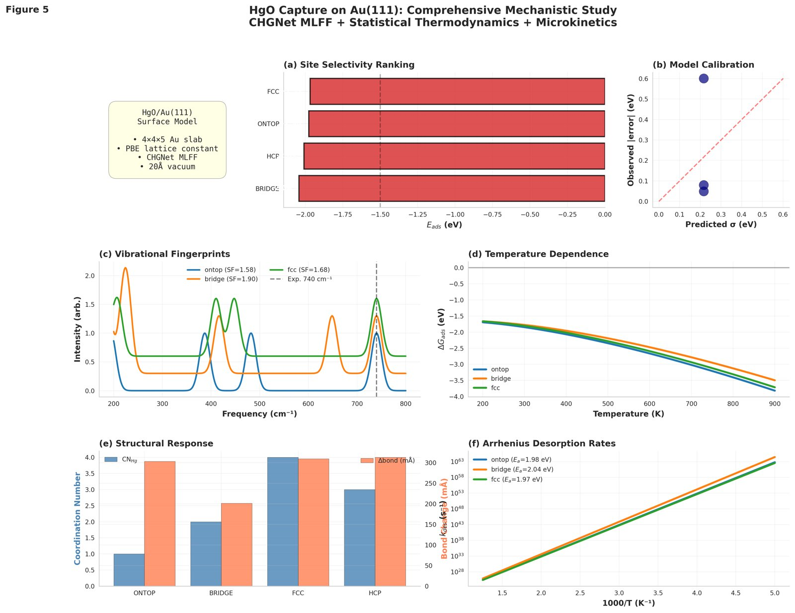
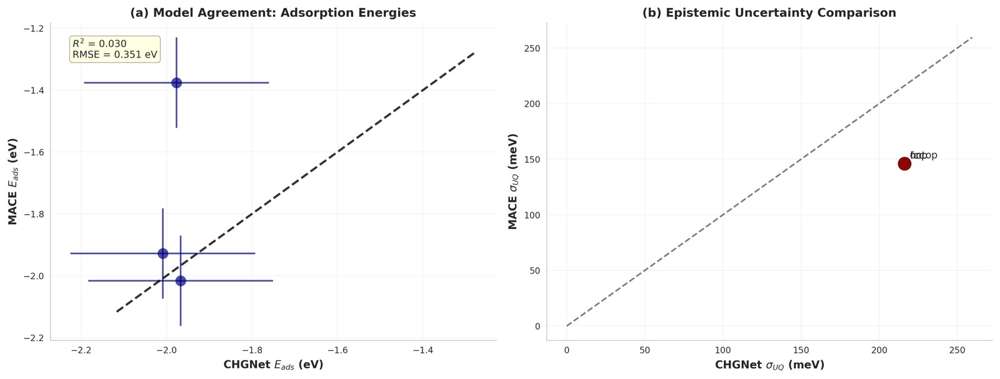
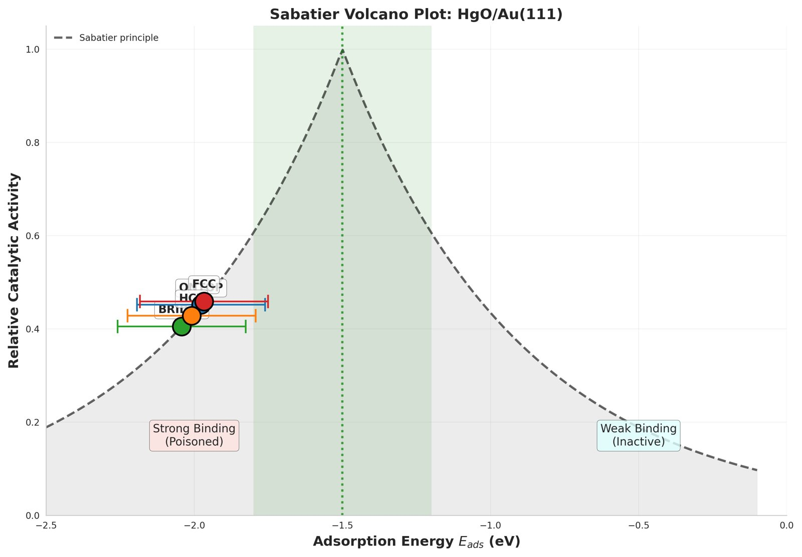
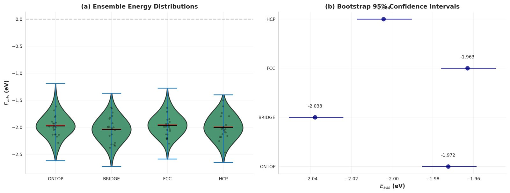
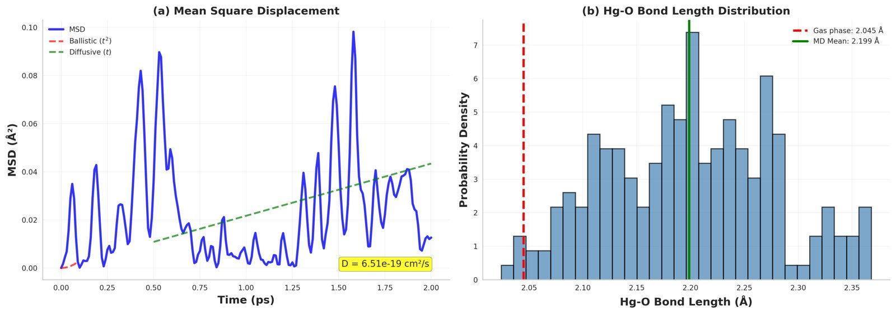
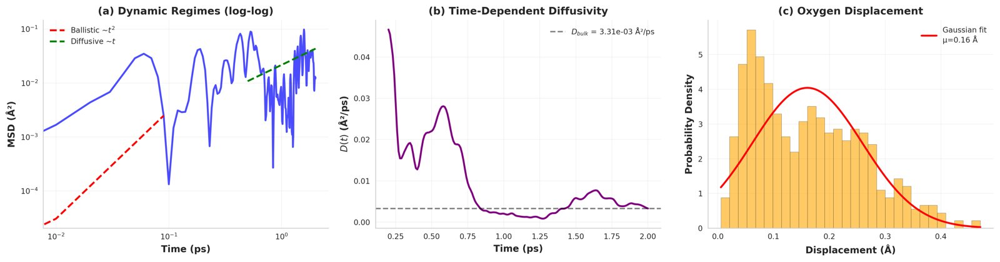
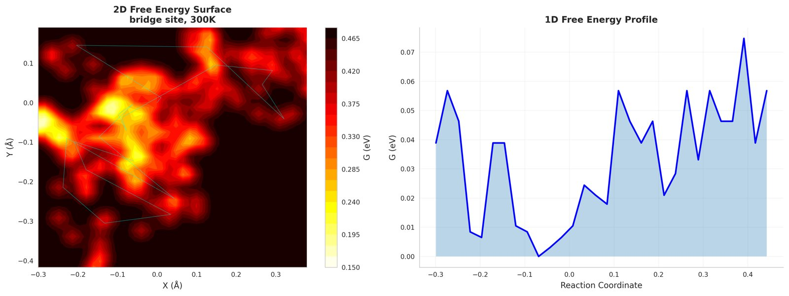

Research
Each project is described by its question, approach and findings. Where a result is not yet verified or is simulation only, it says so.
Undergraduate thesis · 2025–2026
Linear-ramp and warm-start QAOA for soft catheters
- Question
- Can quantum optimization solve real-time trajectory tracking for a multi-actuator soft catheter, and does a smarter QAOA initialization make it cheaper?
- Approach
- Actuator pressures are encoded in binary and the tracking error is written exactly as a QUBO. The exact reduction is verified numerically: on 2,000 random bit strings the QUBO objective matches the physical tracking error to machine precision, and the response matrix is confirmed causal (lower-triangular).
- Benchmark
- Classical MPC, simulated annealing, full-parameter QAOA, linear-ramp QAOA and warm-start QAOA on a 24-qubit statevector simulation, then a closed-loop receding-horizon extension under hysteresis.
- Note
- Simulation only. The actuator model is not calibrated against an experiment. Quantitative results will be added here once verified against the final runs.
JINR, INTEREST programme (remote) · 2026
Adsorption of HgO on Au(111)
- Question
- Where does HgO bind on gold, and how much can universal machine-learning force fields be trusted to say so?
- Approach
- CHGNet v0.3.0 and MACE-MP-0 on a 4×4×5 Au(111) slab with 20 Å vacuum: geometry optimization at four sites, weight-perturbation ensembles for epistemic uncertainty, vibrational analysis, free energies from 200 to 900 K, Langevin MD at 300 and 500 K, and coverage effects.
- Findings
- The bridge site has the lowest adsorption energy (−2.04 eV) and binding is strongly chemisorptive. But the 75 meV spread between sites is smaller than the ensemble uncertainty (about 216 meV), so no site is statistically resolved. MACE and CHGNet differ by 601 meV at the on-top site, and MACE fails at 45° tilts.
- Why it matters
- The paper reports the limits of the method as a result, and names DFT validation and fine-tuning as the next step.


Cross-model validation of CHGNet and MACE-MP-0
Sabatier picture: all four sites bind strongly
Epistemic uncertainty and bootstrap intervals
Langevin MD: mean-squared displacement and Hg–O bond length
Ballistic and diffusive regimes
Free-energy surface from MDWith Prof. Ayman El-Amin · 2023–2024
APEX: a multifunctional protective screen for solar panels
- Question
- Can the heat and UV that damage solar panels in Aswan (60 °C+) be turned into useful energy instead of being mitigated?
- Approach
- A transparent stack: a luminescent layer that converts UV, an integrated thermoelectric layer that spreads heat and harvests electricity, and a self-cleaning anti-reflection nanocoating. Optical and thermal responses were modelled in COMSOL Multiphysics before fabrication.
- Outcome
- A working prototype built with competition funding, and a design proceeding to patent registration.
Team project · Pan-African Quantum Challenge 2025
Machine-learning stacking ensemble for quantum error mitigation
- Question
- Can a learned model recover ideal expectation values from noisy quantum circuit outputs?
- Approach
- 36,450 simulated samples from EfficientSU2 circuits with 4, 8 and 12 qubits, three entanglement patterns and three noise channels (depolarizing, amplitude damping, readout). An XGBoost, LSTM-enhanced network and random forest are combined by a ridge meta-learner.
More work
- Physics-informed neural network for lead-free perovskites · 2025 · award-winning project
- Six 128-unit tanh layers with Poisson and continuity equations as soft constraints, trained on 1,181 devices from the Perovskite Database, followed by NSGA-II multi-objective search and Monte Carlo dropout for uncertainty.
- CO₂–NH₃ reaction pathways with VQE · Bibliotheca Alexandrina hackathon · 2025
- Classical DFT geometries mapped to qubits, custom VQE circuits run on IBM quantum hardware with error mitigation.
- Flood and desertification risk prototype · Desert Research Center, Marsa Matrouh · 2025
- First place among teams, with a 5,000 EGP seed grant. A prototype pipeline (climate, groundwater, flood routing) built on synthetic data, meant to be connected to real records.
- Cosmology beyond ΛCDM · British University in Egypt · 2025
- Summer-school project on alternative models and the H₀ and σ₈ tensions using Bayesian inference.